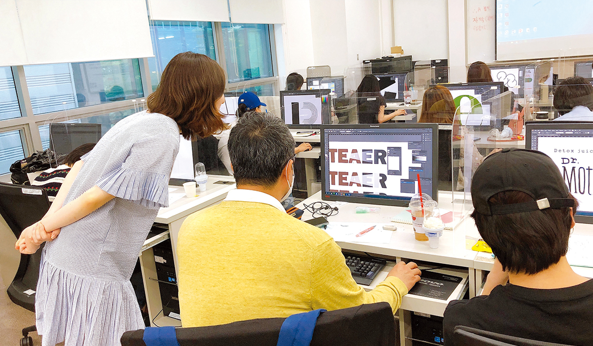

현재 정부에서는 디지털 뉴딜 사업을 추진하면서 4차 산업혁명 시대에 부응하는 첨단 기술 기반 산업의 발전 및 육성을 추진하고 있다. 이 같은 흐름에 세종특별자치시시설관리공단은 ‘인공지능을 활용한 지하 구조물 내·외부 진동 감시 기반의 안전사고 예방시스템 구축’ 사업을 진행하며 IoT 및 인공지능, 디지털 트윈 기술의 융합 시스템을 도입했다. 이 사업에서 최우선으로 지향했던 목표는 ‘재난과 안전에 대한 스마트한 관리로 사고 발생을 최소화’하는 것이다.
글 정준(세종특별자치시시설관리공단 공동구관리팀 대리)
재난·안전 혁신경영을 선도하는 세종시설공단
세종특별자치시시설관리공단(이하 공단)은 행정수도 세종시의 쾌적한 도시환경 조성과 공공 시설물의 효율적인 관리 운영으로 주민복리 증진과 시민행복을 실현하고 있다. 그중에서도 전력, 상·중수도, 통신, 난방 등 Life line을 지하매설물 내 공동수용한 공동구를 관리·운영하고 있는 공단은 재난·안전사고의 사각지대 해소 및 즉각적인 대응을 위한 ‘인공지능을 활용한 지하구조물 내·외부 진동 감시 기반의 안전사고 예방시스템’ 기술을 구축했다.
그 과정에서 혁신적인 신기술 도입에 성공하며 스마트 뉴딜을 접목한 경영 혁신을 이뤄냈다. 4차 산업혁명 혁신 기술을 활용한 비대면 스마트 서비스를 제공해 시대 변화에 발맞춰 나가는 지방공기업의 면모를 잘 보여주고 있다.
행복도시 세종을 대표하는 혁신공기업
세종시는 대한민국의 유일한 특별자치시이자 실질적인 행정수도의 역할을 수행하고 있는 명실공히 대한민국 행정중심복합도시다. 공단은 공공 시설물의 효율적 관리로 세종시 발전과 주민 복리에 기여하도록 2016년 세종시 최초로 설립된 지방공기업이다. 설립 당시에는 공동구, 장사시설, 공영주차장, 임대시설 등을 관리하였으며, 현재는 공공체육시설, 지식산업센터, 임대아파트, 생활자원회수시설, 캠핑장 등 다양한 사업 분야로 확대・운영하고 있다.
공단은 짧은 기간 내 각고의 노력을 통해 2021년 한 해 조명 기반의 코로나19 방역시스템 구축 및 공동구 스마트 관리시스템 구축 등 각종 정부 사업을 기반으로 한 시설물에 혁신 기술의 적용을 확대해가고 있다. 이같은 노력으로 2년 연속 혁신성과 최우수기관에 선정되어 행정안전부 장관상을 수상하는 등 대내외적으로 인정받고 있다.
전국 최대 규모 세종공동구, 재난·안전 관리의 고민
공단은 약 31개 공동구 중에서 단일 연장 규모가 가장 큰 공동구를 관리·운영하고 있다. 관리·운영에 있어서 Life line이 지하에 매설된 지하공동구의 특성상 재난·안전사고 발생 시에는 대규모 사고로 이어질 수 있다. 이러한 사고를 미연에 방지하기 위해서는 사각지대 없는 실시간 감시 및 즉각적인 사고 대응을 해야 하는데 관리 구간이 방대하여 인력을 통한 실시간 점검은 현실적으로 무리가 있다.
이런 각종의 문제점을 해결하기 위해 민간 중소기업과 해결하고자 했다. 해결 과정에서 민간전문인의 의견 수렴, 전문기관의 기술 검토 등 구체적으로 검토하였고, 한국형 디지털 뉴딜과 발맞추어 ‘인공지능을 활용한 지하구조물의 내·외부 진동 감시 기반의 안전사고 예방시스템 구축’을 설계하였다. 이를 구체적으로 실현하기 위해 관련 정부사업 과제 제출 및 선정을 통해 본 기술을 본격적으로 추진하였다.
재난·안전관리 패러다임 변화 노력
Life line의 중단은 시민들의 생활은 물론 세종정부청사의 국가 행정력까지 마비시킬 수 있는 중요한 사안이다. 공단은 기존 인력 중심의 순찰 체계 패러다임을 바꾸었다. 사람의 순찰 이후 발생하는 공백에 대한 한계를 극복하기 위해 IoT 진동복합센서(진동, 온·습도, 영상)을 설치하여 초당 약 100개의 데이터를 수집하고, 수집된 데이터를 인공지능 학습을 통해 위험에 대해 예측·인지한 후 위험상황 발생 시에 디지털 트윈(가상현실)으로 상황을 표출하는 시스템을 개발·구축하였다. 관리자는 해당 시스템을 이용해 24시간 모니터링하고 재난·안전사고 시 즉각적인 대응으로 시설물의 복구 시간 단축, 피해 비용 절감 등 파급 효과가 클 것으로 기대된다.
끊임없는 혁신 기술로 가치 창출
한편 공단은 ‘인공지능을 활용한 지하구조물 내·외부 진동 감시 기반의 안전사고 예방시스템’ 기술에 대한 확산 및 제품 판로 확보를 위한 정책도 적극적으로 추진하였다.
먼저 기술신뢰성을 위한 KC 인증을 획득하였으며, 특허청으로부터 ‘진동 신호를 기반으로 한 안전 진단 방법 및 이러한 방법을 수행하는 진동센서(IoT 진동센서)’ 및 ‘지하공동구 고장 예방 방법 및 장치(안전사고예방시스템)’ 총 2건의 특허를 취득하여 기술 표준화에 성공하였으며 지적재산권을 확보하였다.
아울러 대전·충남의 혁신 선도 사례로 KBS 지역방송 방영 및 조달청 혁신 시제품 패스트트랙 2인 ‘IoT 진동감지 위험예측시스템’이 등록되어 제품 홍보 및 판로를 확보하였다. 뿐만 아니라 ‘2021년 대한민국 발명특허대전 동상’, ‘2021년 행정안전부 주관 지방공기업 혁신우수사례 최우수상’ 수상 등 다양한 대외 수상을 통한 기술우수성을 인정받았으며, 유수의 타 지자체 또는 기관의 벤치마킹 대상이 되는 등 뜨거운 관심을 받고 있다.
안전을 최우선적으로 혁신기술 도입
공단은 공공 시설물의 효율적인 관리로 시민의 복리 증진 및 각종 사고를 미연에 방지하자는 목표를 설정하여 안전을 최우선적으로 생각했다. 이와 같은 목표를 달성하기 위해 민간자문단 현장 점검, 위험성 평가, 국가안전대진단, 1일 1점검 등 다양한 점검으로 도출된 문제점을 개선하기 위해 힘썼다. 이러한 개선의 노력에도 안전 취약 부분은 나타났고, 이 중 한 부분을 혁신기술 도입을 통해 해결했다.
이 외에도 업무연속성 관리시스템(BCMs) 도입, 재해경감우수기업 인증 등 다양한 해결 방법을 도입해 취약한 부분을 보완해나갔다. 이렇게 기본을 중시하고 부족한 부분은 새로운 방식을 도입한 결과 공단 관리 시설물 중 공동구에서는 안전 분야 최고 권위를 자랑하는 ‘2021년 대한민국 안전대상’에서 국무총리상을 수상했다.

재난·안전 분야에 선제적으로 추진해 경영 혁신
작년 ‘배출가스 저감형 화장로’에 이어 ‘인공지능을 활용한 지하구조물 내·외부 진동 감시 기반의 안전사고 예방시스템’ 개발로 각기 다른 시설물 운영에 맞춘 새로운 스마트 플랫폼을 제공했다. 나아가 코로나19 상황에 맞춰 ‘조명 기반의 코로나19 방역시스템 구축’을 통해 시설물 방역 관리 체계를 적용하였고, 공영주차장의 화재 예방을 위해 무선 화재감지기를 도입하는 등 고객 안전을 위한 재난안전 분야에 선제적으로 적용하고 있다. 그 외에도 캠핑장 날씨경영 자동화시스템 구축, 공영주차장 통합관제시스템 구축, 홈페이지 민원 응대(Chat-Bot) 도입 등 운영 환경에 맞춘 고객 서비스를 조속히 도입할 예정이다.
시대의 흐름에 발맞춰 새로운 기술을 적극적으로 반영해 경영 혁신을 이뤄가고 있는 공단은 올해도 시민들에게 쾌적하고 안전한 도시의 삶을 제공하기 위해 최선을 다하고, 세종시 시민에게 사랑받는 1등 공기업으로 거듭나기 위해 노력하고 있다.
세종특별자치시시설관리공단 계용준 이사장
“이번 기술 개발의 혁신은 전국에서 가장 긴 세종시의 공동구 시설과 관련해 개선 사항을 도출하기 위한 과정에서 생긴 아이디어로 출발한 사업이었습니다. 이 작은 아이디어로부터 시작한 혁신은 4차 산업혁명 기술이 접목된 안전사고 예방시스템 개발로 이어졌으며, 재난과 안전 사고를 예방할 수 있는 큰 자산으로 위상을 갖추게 됐습니다. 이번 기회를 통해 세종특별자치시시설관리공단은 작은 의견 하나라도 엄청난 시너지 효과를 발휘해 공공기관의 사회적 의무를 충실히 이행할 수 있다는 좋은 경험을 얻었습니다. 공단은 언제나 현장에서 치열하게 고민하며 시민들에게 더욱더 안전한 시설물 관리 서비스를 제공하기 위해 최선을 다하겠습니다.”